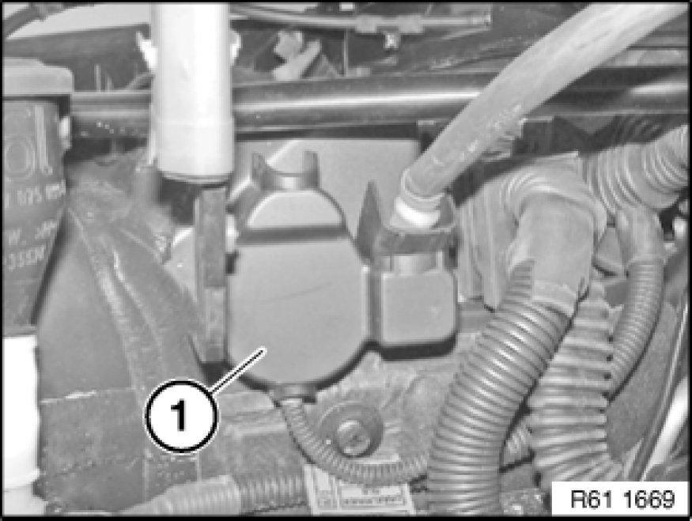
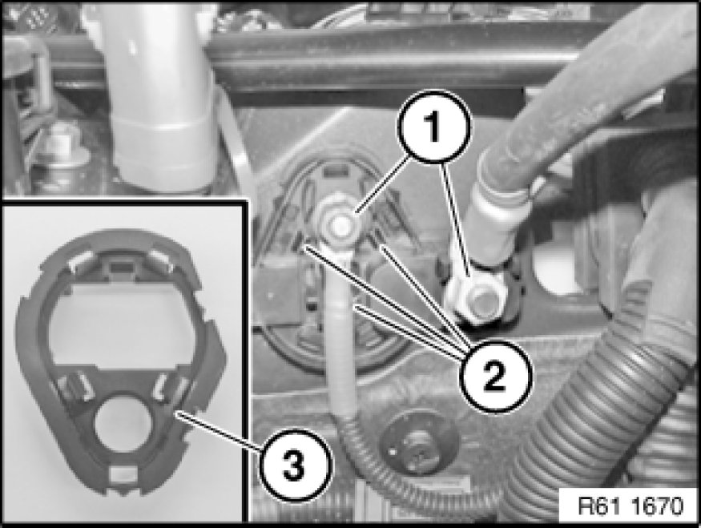

61 14 ... Removing And Installing/Replacing B+ Terminal (Engine Compartment)
61 14 ... - Removing and installing/replacing engine compartment B+ terminal

Important!
Read and comply with notes on handling wiring harnesses 61 00 ... Notes on Handling Wiring Harnesses and Cables and cables.

Necessary preliminary tasks:
- Remove cover from electronics box.

Note:
Work is shown on the E82 N52N by way of example. There may be differences in detail in the case of other vehicle models.

Unclip covers (1) and release nuts underneath. Tightening torque 61 12 4AZ Specifications.
Remove battery positive cables.

Unclip cover (1).

Unscrew nuts (1). Tightening torque 61 12 4AZ Specifications.
Remove battery positive cables.
Release locks (2) and remove frame (3) towards rear from B+ terminal.
Unclip B+ terminal and remove towards front.
Installation Note:
Make sure frame (3) engages correctly in B+ terminal.